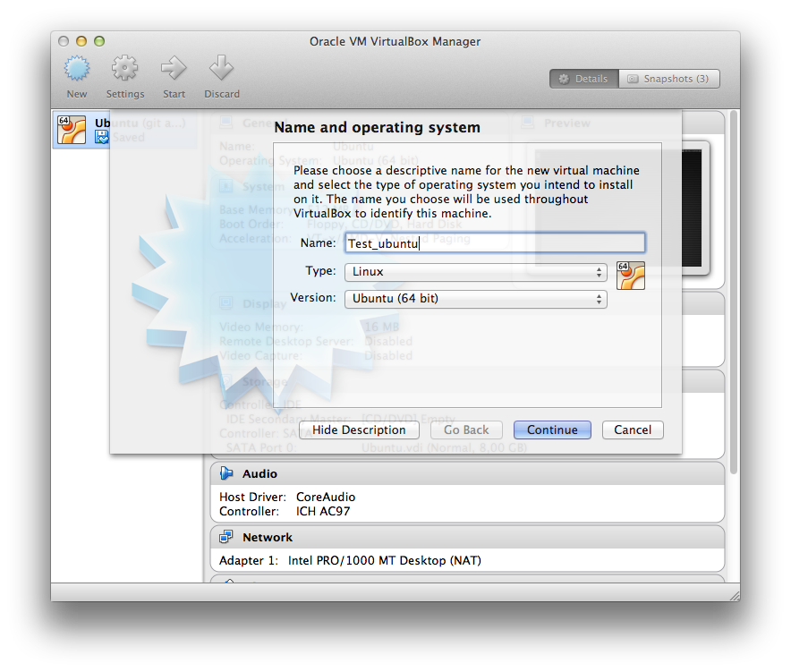

Sprint: Getting Started with Virtualisation
Table of Contents
1 About This Sprint
This sprint introduces a tool for virtualisation (VirtualBox), and a layer on top of this tool that enables automation (Vagrant).
2 User Stories covered in this Sprint
- As a developer I want to have a machine configuration locally accessible which is configured as closely as possible as the production environment so that I can test and mess up locally.
- As a manager I want my developers to be able to test locally in a cheap way so that overall costs are kept down.
3 Introduction
There are varying degrees of achieving the “sandbox” effect sought after in the user stories for this sprint. The bare minimum, which is provided by most development environments, is to at least separate the project into a specific part of the filesystem. A step up is to use a package manager to automatically install all needed dependencies. However, this does not take into account what is already installed on the computer, and which may interfere with the running of your application. Moreover, let’s say you upgrade your development environment; how do you make sure that all traces of the previous environment is cleaned and does not interfere with your desired future setup. This is one common reason for the “Works On My Machine” (WOMM) syndrome, because once you deploy to a different environment you only install the most recent version of your dependencies, and your system breaks.
The solution to this used to be to have a separate machine for testing, that was regularly re-installed to make sure that it only contained what was necessary for the developed software to run. This soon becomes quite cumbersome, when you have to take into account different configurations not only of the developed software, but also versions and configurations of e.g. the operating system.
Enter the idea of virtualisation. The fundamental idea with virtualisation is to emulate a whole computer in software, which then allows any operating system to be installed on top of the virtual hardware. This means that you can set up any number of virtual machines, with different configurations, and test your system as if it was running on a separate machine.
The ability to run virtual machines in this way is in many ways a precursor to the whole cloud computing paradigm, since it also enables different users to run different virtual machines simultaneously e.g. on a server.
Virtual machines are quite heavyweight – each virtual machine contains a complete filesystem, a complete CPU scheduler, memory manager, etc. Often you do not need all of this. A more recent development is to use microservices such as Docker, where each running docker container is not as completely separated and a lot of resources are shared. However, using namespaces – for example the pid namespaces that offers each docker container a “separate” process namespace, and the net namespace that does the same for networking – a process running inside a docker container appears, for most practical purposes, to be running on a separate machine.
We will not cover Docker further in this assignment. While it is possible on some cloud providers to do the base provisioning with the help of docker images, its use is not that widespread yet. Moreover, setting up a docker image is very similar to setting up a virtual machine. However, I encourage you to have a look at docker on your own. I use it quite extensively when setting up new services, or when I want to try something that I don’t know if I am going to keep. The beauty is that once I kill the docker container, all traces of the service are removed, and I don’t have to worry with cleaning up stray processes, junk on the disk, or even closing network ports in the firewall. It may be a fun exercise to see if you can complete the entire assignment using docker instead of virtual machines.
During this sprint, you will read about and install (and test) the software required by the rest of the assignment. During these initial tests, you will notice that installing a virtual machine without automation is time consuming and error prone. It is also difficult to run such a virtual machine in a headless mode – it often requires you to have a virtual screen attached. In comparison, Vagrant enables you to run a pre-installed operating system image without an attached terminal. However, this ease of getting started quickly also comes at a price; you have less control over the base image.
4 Learning Material
4.1 Book Chapters
J. Rosenberg, A. Mateos, “The Cloud at your Service”, Manning, 2010. chapters:
- What is Cloud Computing
- Understanding Cloud Classifications
G. Reese “Cloud Application Architectures”, O’Reilly, 2009. chapters:
- Before the Move into the Cloud
4.3 Further Reading
- PAAS Under the Hood More on how microservices work.
5 Experiential Learning
5.1 Install VirtualBox
- Download VirtualBox for your machine: Download VirtualBox
- Read more about installation details here: VirtualBox User Manual, Chapter 2. Installation Details
- Also download and install the VirtualBox Extension Pack
- Download Ubuntu. Any version will do.
5.1.1 Create a Virtual Machine
- Start VirtualBox
- Create a new Virtual Machine

- Give it a name, and select Linux/Ubuntu (64 bit)

- Click through all the other options with
ContinueandCreate(it alternates) - Double click your newly created virtual machine. It will now ask you to select an install media.
Click on the folder, select your downloaded ubuntu image, and then click on
StartYou are now running the ubuntu installer in your virual machine. Install Ubuntu in your usual way.
5.1.2 Start/Pause/Stop your Virtual Machine
- Double-clicking on your VM in VirtualBox’ UI will start your machine.
- CLosing the window will prompt you whether you want to pause the VM, shutdown nicely, or pull the plug.
- The same options are also available by right-clicking your VM in the VirtualBox UI.
5.1.3 Summary
You have now installed VirualBox. You have created a new virtual machine, and have installed ubuntu on it.
5.2 Install Vagrant
- Make sure you have already installed VirtualBox
- Download and install Vagrant for your machine: Download Vagrant
5.2.1 Create a new Vagrant Virtual Machine (Box)
- Create and enter a new directory, and then run
vagrant init hashicorp/precise64to create a new configuration.This will create a stub
Vagrantfilewhich contains the configuration for your virtual box. - Start your virtual machine with
vagrant upand log in to it withvagrant ssh.This will download (if necessary) a virtualbox Ubuntu image, start it for you, and make it available so that you can ssh into it.
- Browse around. Note that the directory
/vagrantis the same as your starting directory on your host computer.
Summary of Commands:
$ mkdir myVagrantTest && cd myVagrantTest $ vagrant init hashicorp/precise64 $ vagrant up [Lots of text here, telling you what Vagrant is up to] $ vagrant ssh Welcome to Ubuntu 12.04 LTS (GNU/Linux 3.2.0-23-generic-pae i686) * Documentation: https://help.ubuntu.com/ New release '14.04.2 LTS' available. Run 'do-release-upgrade' to upgrade to it. Welcome to your Vagrant-built virtual machine. Last login: Fri Sep 14 06:22:31 2012 from 10.0.2.2 vagrant@precise32:~$
- Exit your Vagrant Virtual Machine as usual:
exit - Remember to clean up after yourself:
vagrant destroy -f
- If you have VirtualBox running, you can see how machines are added and removed as a consequence of the
upanddestroycommands. - To speed things up, you may wish to add a box (a virtual machine image) without attaching it to any particular configuration with
vagrant box add hashicorp/precise64This will download the image and store it for future use. There is a Catalogue of available virtual machine images available for Vagrant.
5.2.2 Summary
You have now installed Vagrant. You have downloaded a virtual machine image, started it, and logged in to it. After looking around, you have destroyed your virtual machine, thus leaving a clean slate for the next time you bring the machine up again.
Now would be a good idea to go back to the Vagrant Tutorial and play around a bit more.
5.3 Update Sprint Test Plan
Go through the user stories for this sprint and make sure you have a clear understanding of how to solve each of them.
Revisit and update your risks and contingencies section.
Add and/or revise the following items to your glossary:
- Host Operating System
- Guest Operating System
- Virtual Machine
Make sure you understand what each item is, and how to use them either in isolation or together with the other concepts.
5.4 Update Course Backlog
- What can you use your virtual machine for?
- Can you start up your VM automatically?
- Can you start up your VM without attaching a screen (and run it like a true server)?
- What if your desired environment consists of several machines?
- Can you install different software so that you may boot up specialised versions of your guest operating systems?
Where do you go from here? Are there any questions that you want answered? Add them, along with a brief strategy for how to find an answer.
6 Sprint Acceptance Tests
You are done with this sprint when you have:
- Read the tutorials about VirtualBox and Vagrant
- Installed VirtualBox
- Created a virtual machine in VirtualBox
- Installed an operating system on your virtual machine
- Installed Vagrant
- Created a Vagrant Box and logged in to it
- Destroyed your started instance of a Vagrant Box
You may also have:
- Updated your Sprint Test Plan
- Updated your Course Backlog